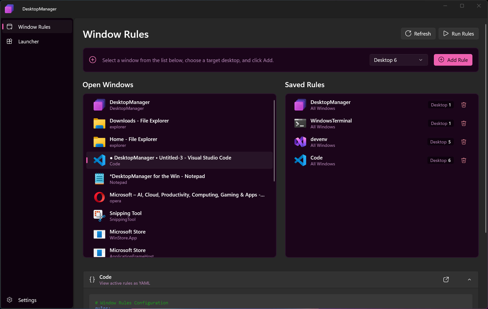
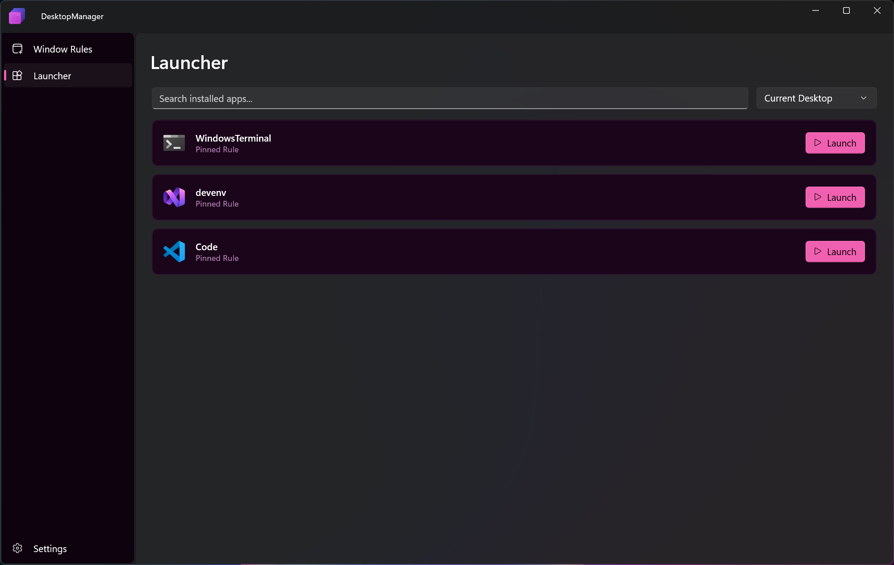
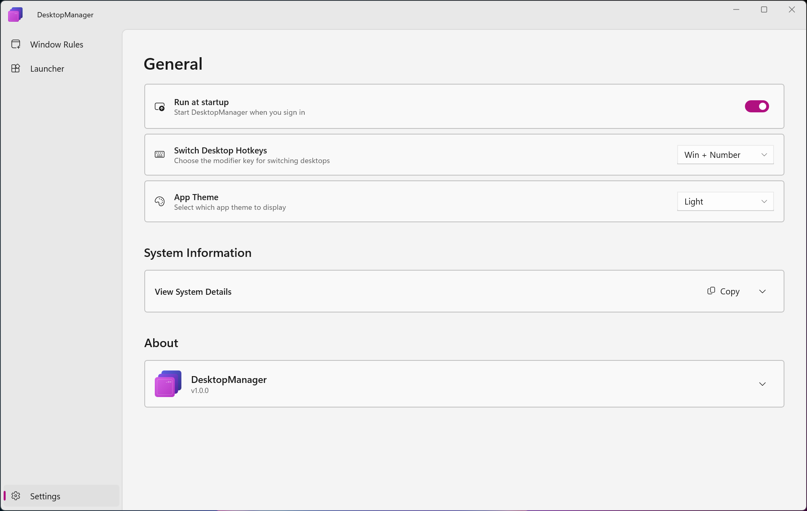
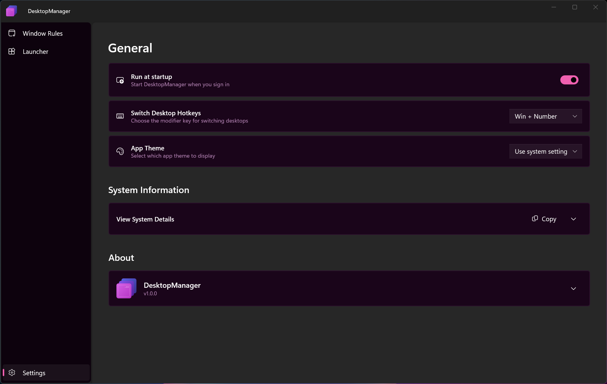

Optimize your screen space.
Virtual Desktops for Windows with fast switching. Ever wanted a KDE-like desktop manager, app pinning to virtual desktops, and a sensible launcher? Try DesktopManager.

winget install DesktopManager
Virtual Desktops for Windows with fast switching. Ever wanted a KDE-like desktop manager, app pinning to virtual desktops, and a sensible launcher? Try DesktopManager.
winget install DesktopManager




Productivity tools should serve the purpose, not track you. DesktopManager is clean, private, and bloat-free. No accounts, no telemetry, no nonsense.
Navigate between desktops faster than ever with custom hotkeys and fluid animations.
Automatically move apps to specific desktops based on title, process name, or window class.
Built with WinUI 3 to look and feel exactly like a part of Windows 11.
Advanced virtual desktop management for Windows, inspired by the flexibility of KDE.